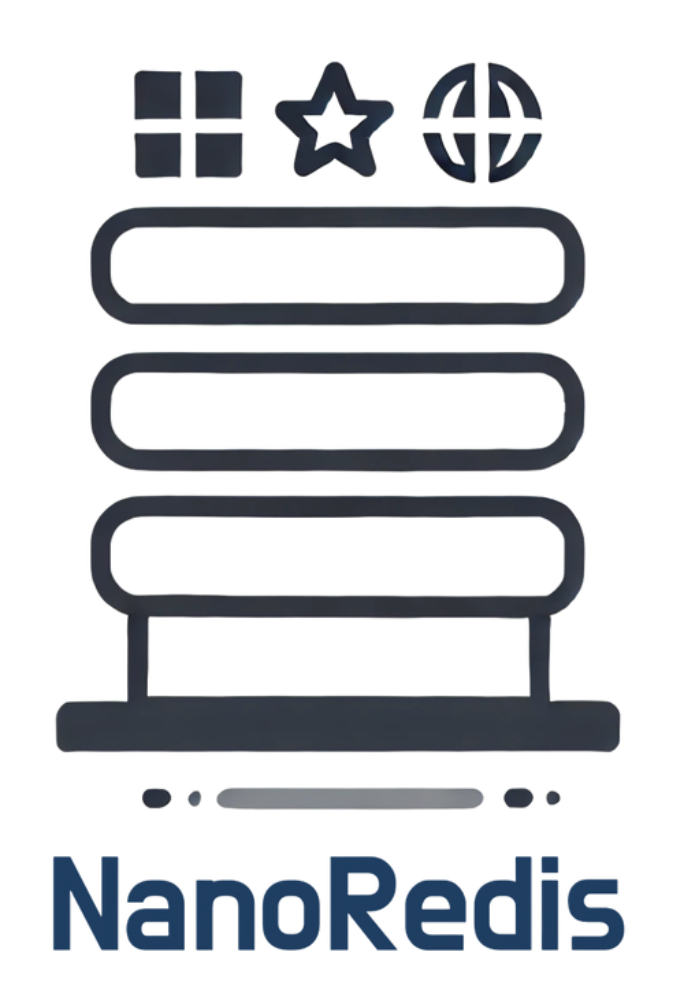

Explore on GitHub: NanoRedis
Introduction
Redis is a powerful in-memory key-value store, renowned for its speed and versatility. Inspired by its design, I embarked on a journey to build NanoRedis—a simplified Redis-like storage engine. This project was not just about replication; it was a deep dive into Linux system programming, asynchronous design, and storage system principles.
Motivation
Why build NanoRedis? Beyond curiosity, I wanted to:
- Understand the internal mechanics of KV-stores.
- Learn how to implement asynchronous, non-blocking I/O.
- Explore system programming intricacies in a hands-on project.
Key Features
1. Event-Driven Network Model
At the heart of NanoRedis is an event-driven architecture, utilizing Linux epoll for efficient, non-blocking I/O. This ensures that NanoRedis can handle multiple client connections with minimal overhead.
2. Rich Data Structures
NanoRedis supports a variety of data types:
- Strings
- Hashmaps
- Lists
- Sets
- Sorted Sets (SkipLists)
3. Cache Strategies
NanoRedis implements an LRU (Least Recently Used) Cache with lazy deletion, ensuring optimal memory usage without frequent cache invalidation.
4. TTL Support
Keys in NanoRedis can have a Time-to-Live (TTL), allowing for automatic expiration, a feature critical for many real-time applications.
Challenges and Lessons Learned
Challenge 1: Mastering Linux System Programming
Linux system programming was a steep learning curve, particularly when dealing with low-level I/O and memory management. To overcome this, I relied heavily on:
- Unit testing: To validate core functionalities.
- Hands-on experimentation: Diving deep into man pages and examples.
Challenge 2: Generic Containers in C
Implementing reusable, generic containers in C was another hurdle. I tackled this by revisiting design patterns and intrusive data structures.
Lessons Learned
- Memory Efficiency: I gained a deeper appreciation for designing memory-efficient data structures.
- Concurrency Models: NanoRedis reinforced the power of actor models and thread-pooling in handling high concurrency.
Performance
Using redis-benchmark, NanoRedis demonstrated competitive performance metrics, particularly in scenarios with a high volume of concurrent connections. This highlighted the effectiveness of its event-driven, single-threaded core, complemented by a multi-threaded request handler.
Future Improvements
Looking ahead, I plan to:
- Implement replication for fault tolerance.
- Add persistence through snapshotting or journaling.
- Optimize performance further with advanced data structures.
Conclusion
NanoRedis was a challenging yet rewarding project, providing invaluable insights into system programming and storage engine design. I encourage anyone interested in storage systems to try building their own Redis-like engine. It’s a journey worth taking!
Repository
Feel free to explore the project here:
Acknowledgments
This project was inspired by: